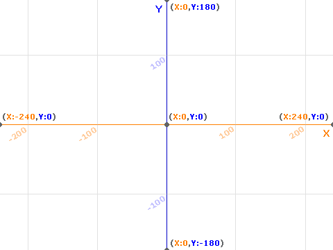

定位到 x:() y:() |
定位到指定座標位置 |
|---|
| 類別 | 動作類 | 形狀 | 堆疊 | 適用 | 角色 |

〈定位到指定座標位置〉積木是〔動作類〕〖堆疊狀〗積木。
有二個數字輸入類型之圓矩形參數框。分別用來指定x、y座標值。可嵌入[布林積木]。（true轉變成 1，fales轉變成 0）
可以使角色的 x 座標與 y 座標移動定位到指定座標值位置。
- Scratch舞臺是 480ｘ360 像素的矩形（如圖所示），它採用「直角座標系」來表示角色位置，舞臺的中心就是座標原點（ 0 , 0 ）。
- 用(x 座標值,y 座標值)來表示角色在舞臺上的位置。
- 默認座標值會隨著角色在舞臺上的位置改變。

🧩使用範例
當角色要瞬間移動到另一個位置時，使用這個積木是最簡單的方法。
- 角色初始定位
當@greenflag被點擊 定位到 x:(50) y:(-80)
- 使用〈蓋章〉積木，讓角色在移動到不同位置時蓋印自己的造型。
當@greenflag被點擊 造型換成(右1 v) 定位到 x:(-65) y:(4) 蓋章 造型換成下一個 定位到 x:(-95) y:(-1) 蓋章 造型換成下一個 定位到 x:(-61) y:(-19) 蓋章
🧩替代積木